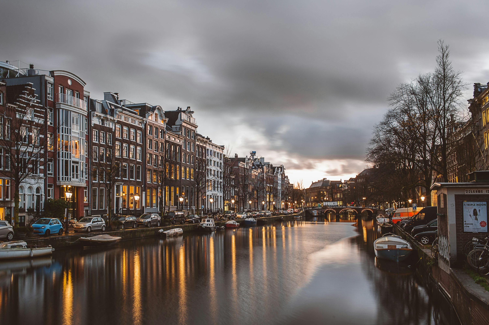

Chadi Kourich
Ik ben Chadi, de jongen op de foto. Ik ben geboren in In de stad waar ik woon; Amsterdam. Ik zit sinds kort op het Mediacollege Amsterdam, waar ik de opleiding Software Development volg.
Amsterdam
Ik ben geboren in Amsterdam en woon er al mijn hele leven. Ookal woon ik er zo lang, ben ik de stad pas echt leren kennen rond mijn vijftiende. Nu, bijna 4 jaar later ken ik de hele stad als mijn broekzak. Ik voel mij hier altijd thuis, maakt niet uit waar ik precies ben, van van noord tot zuid, oost tot west, in Amsterdam voel ik mij het best.

In mijn vrije tijd...
Als ik niet op school zit, ben ik meestal aan het werk. Werken vind ik een goeie tijdsbesteding, het houdt me bezig en helpt me met ervoor zorgen dat ik moe thuis kom. Maar ik werk om te leven, ik leef niet om te werken. Daarom is leuke dingen doen en een goeie tijd hebben ook belangrijk. Meestal ga ik in het weekend, wanneer de meeste van mijn vrienden ook vrij zijn iets met ze doen. Er wordt nooit van te voren besproken wat we gaan doen maar altijd hebben we een leuke tijd.

Wat kan ik al?
Van het programmeren en alles er omheen heb ik weinig tot geen kennis. Maar dat is niet erg, ik ben hier om te leren. Mijn sterke schoolvakken zijn: Engels, Wiskunde en (bedrijfs) economie. Mijn sterke punten zijn dat ik heel goed gefocust aan het werk kan, snel dingen oppak en altijd opzoek ben naar een oplossing. Op gebied van samenwerken en plannen kan ik wel wat verbetering gebruiken.
Mijn top 10 voetbalclubs
- AC Milan
- Liverpool
- PSG
- Manchester City
- Manchester United
- Ajax
- Atletico Madrid
- Chelsea
- Barcelona
- Real Madrid